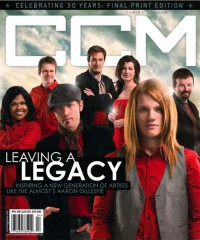

CMnexus
:
Contemporary Christian culture, music, and media.
Magazines
Profiles
Dove Awards
cmnexus.org
CM
nexus
→
Profiles
→
Writers: W
→
Matthew West
Matthew West
Writing credits listing
Jan 2006
in
CCM
28.7
"A New Kind of Song"
Feb 2006
in
CCM
28.8
"Delilah, Rascal Flatts, and the Story of a Love Song"
Mar 2006
in
CCM
28.9
"The Mind vs. The Heart"
Apr 2006
in
CCM
28.10
"Gone Fishin'"
May 2006
in
CCM
28.11
"NASCAR, A Dog Named Earl and Chasing the Right Kind of Song"
Jun 2006
in
CCM
28.12
"Critical Condition"
Jul 2006
in
CCM
29.1
"Make It Matter"
Aug 2006
in
CCM
29.2
"Peace and Quiet"
Sep 2006
in
CCM
29.3
"Exercising Your Imagination"
Oct 2006
in
CCM
29.4
"Speak the Language"
Nov 2006
in
CCM
29.5
"A Work In Progress"
Dec 2006
in
CCM
29.6
"Christmas In July"
Jan 2007
in
CCM
29.7
"Smile, It's Raining"
Feb 2007
in
CCM
29.8
"Between the Lines"

Apr 2008
in
CCM
30.9
TobyMac
Jul 2013
in
CCM Digital
"An Excerpt from Forgiveness"
Nov 2017
in
Worship Leader
26.6
"Songwriting With Matthew West"
CMnexus
(noun)
The magazine index
of modern music
and Christianity
© 2011 CMnexus. Last updated August 2025.
Contact:
Rants and other correspondence to:
editor -AT- cmnexus
-DØT- org
About